Релігійні
Віра
- Визволити Гріб Господній
- Безпека паломників
- Обіцянка спасіння
Війни Заходу за Святу землю — і те, що вони змінили в Європі та на Сході.
Чотири кроки: спочатку світ до походів, далі — чому вони почались і як ішли, потім ключові події, наостанок — наслідки.
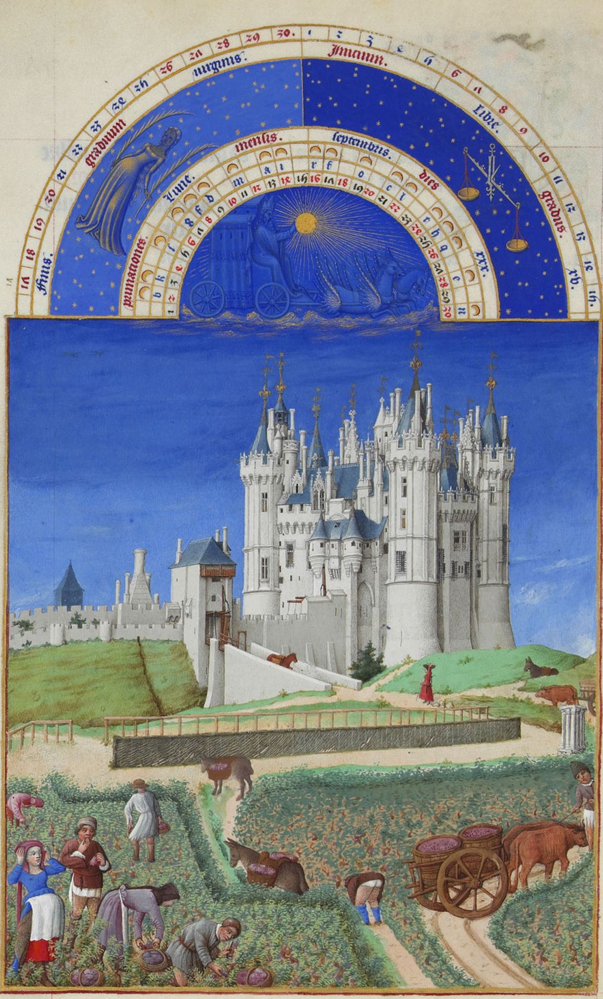
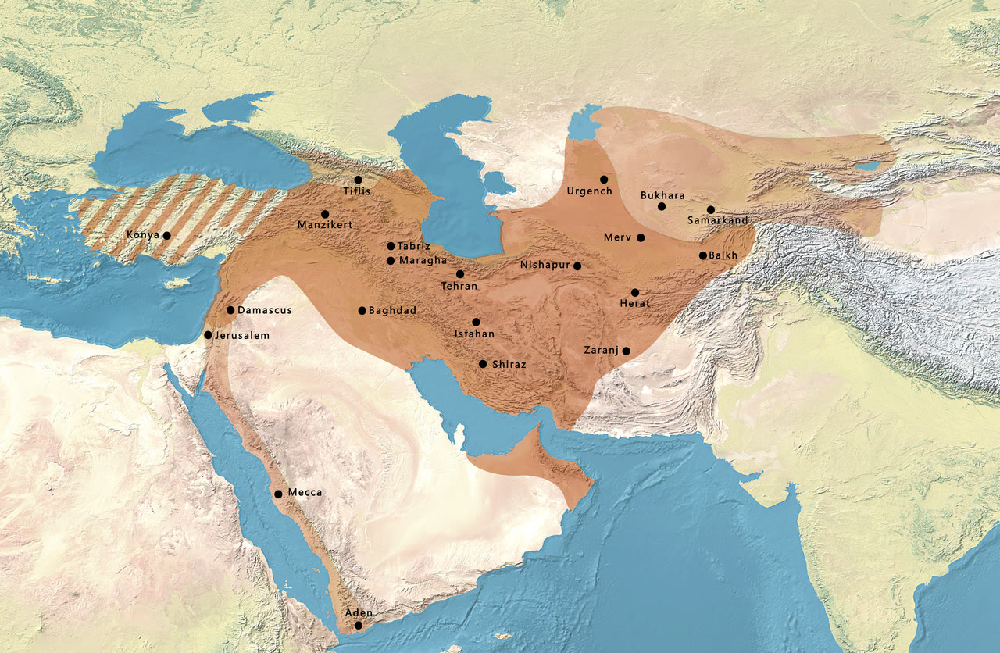
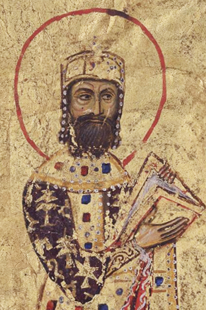
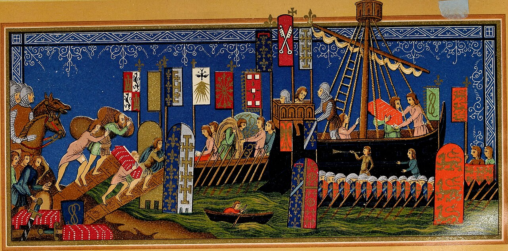
Хрестові походи — військові експедиції західноєвропейців на Близький Схід кінця XI — кінця XIII ст. під гаслом визволення Святої землі й Гробу Господнього.
Палестина, передусім Єрусалим: місце, яке християни вважали святим через євангельські події. У XI ст. містом володіли мусульманські правителі.
Окремо існували Реконкіста на Піренеях і походи в Балтику — теж під знаком хреста, але цей урок про Схід.
Не одна причина, а вузол: віра, влада, земля і торгівля.
«Цього хоче Бог!»Крик натовпу після промови папи Урбана II. Латиною: Deus vult.
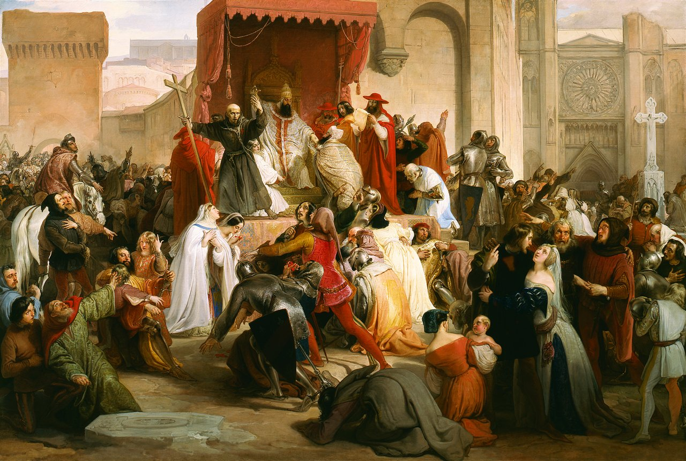
| Хто | Чого прагнув |
|---|---|
| Папа і церква | Авторитет Риму, визволення святинь |
| Рицарі | Земля, слава, відпущення гріхів |
| Селяни | Наділ, втеча від залежності й голоду |
| Купці Італії | Порти, шляхи, прибуток на Сході |
| Візантія | Наймане військо проти сельджуків |
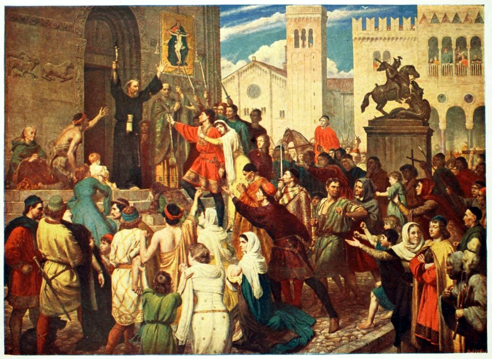
Програма 7 класу вимагає назвати межі першого–четвертого походів. Решта — «пізні», до падіння Акри.
| Похід | Роки | Суть | Результат |
|---|---|---|---|
| Перший | 1096–1099 | Рицарі Європи через Константинополь до Палестини | Взято Єрусалим, постали держави хрестоносців |
| Другий | 1147–1149 | Відповідь на падіння Едесси (1144) | Невдача |
| Третій | 1189–1192 | Після того, як Саладін повернув Єрусалим | Угода: місто за мусульманами, паломникам — шлях |
| Четвертий | 1202–1204 | Замість Єгипту / Єрусалима — удар по християнському місту | Розгром Константинополя |
Потім були ще походи (зокрема Людовика IX). 1291 р. мусульмани взяли Акру — кінець держав хрестоносців у Святій землі.
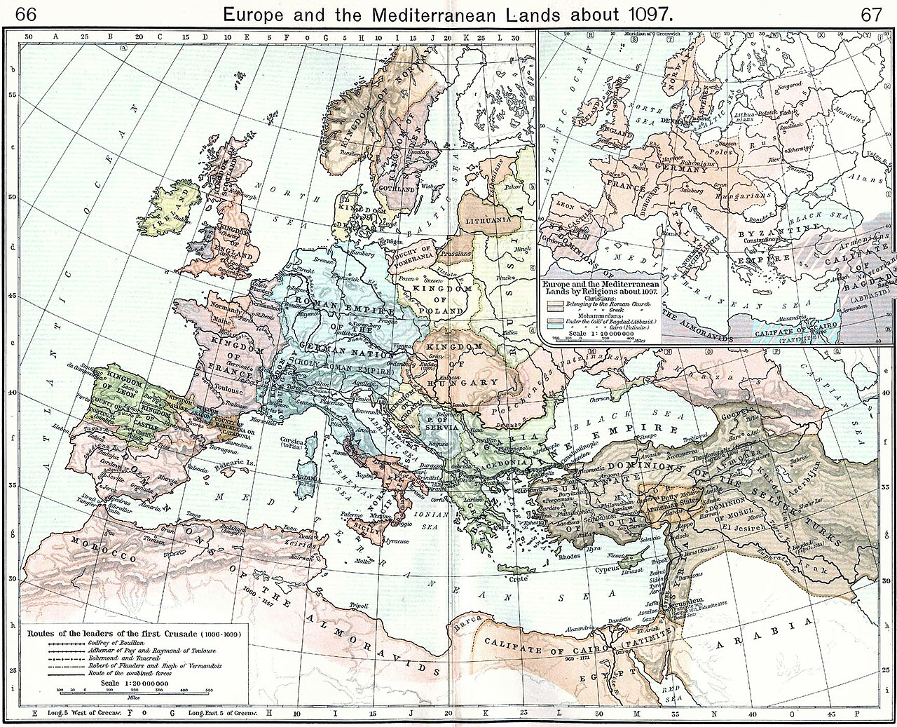
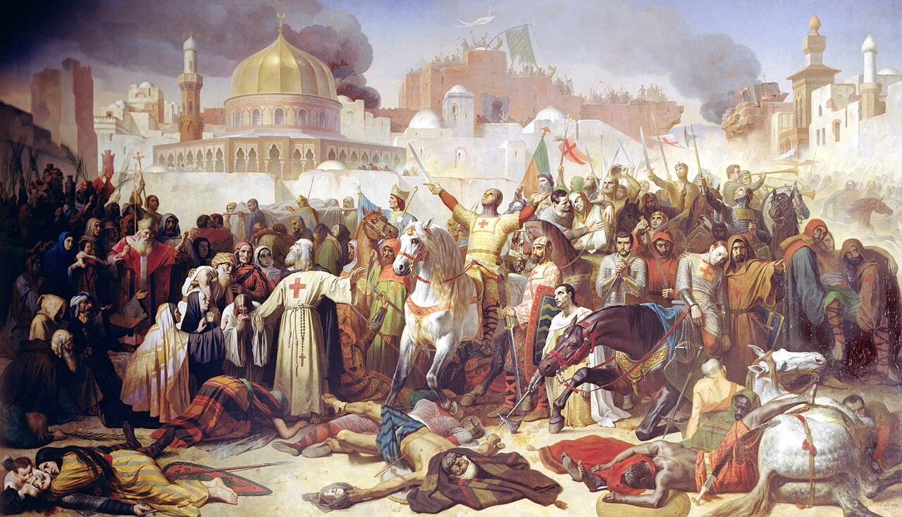
Чотири «заморські» володіння на узбережжі Леванту. На мапі — стан близько 1135 року.
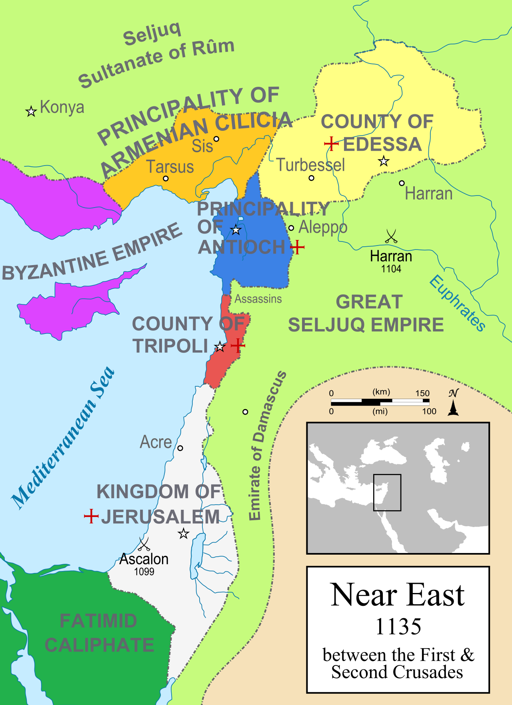
Ченці зі зброєю: обітниці бідності й послуху + військова служба. Обороняли пілігримів і замки.
Храм Соломона, бл. 1119. Банки, фортеці, білий плащ із червоним хрестом.
Лікарня св. Івана. Чорний плащ, білий хрест. Крак де Шевальє — їхній замок.
Німецький орден, кінець XII ст. Пізніше — Балтика, не лише Свята земля.
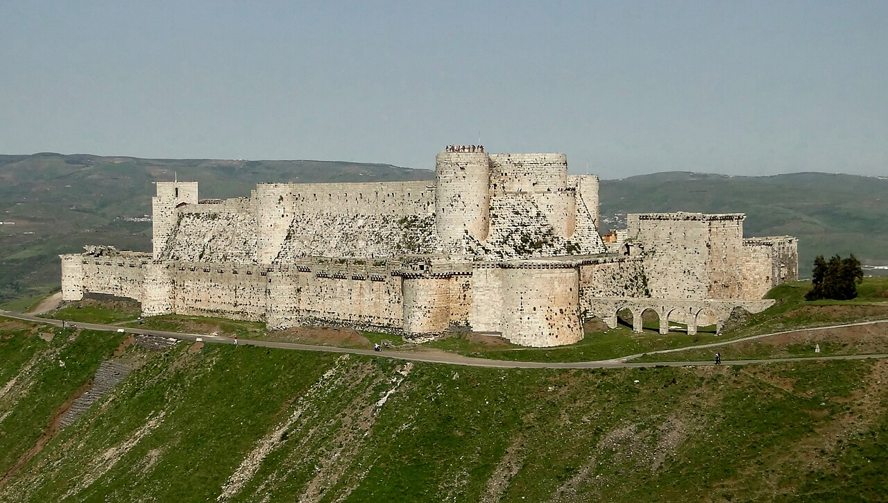
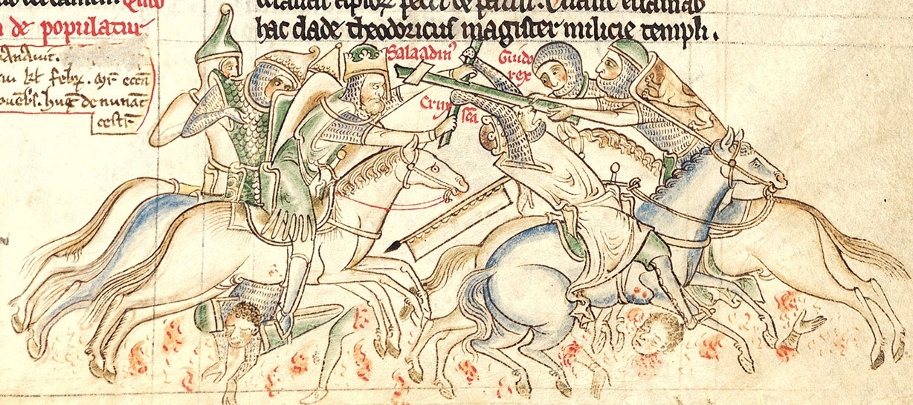
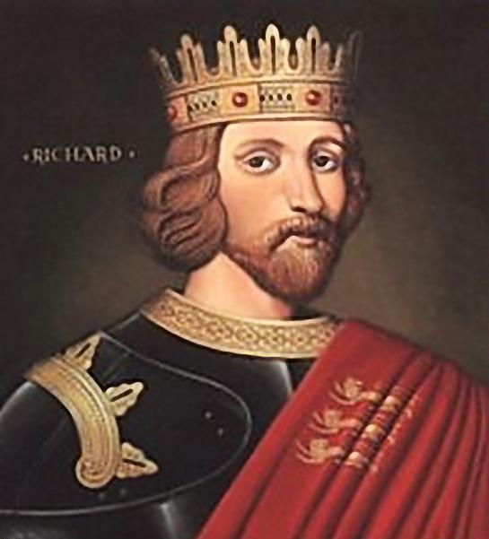
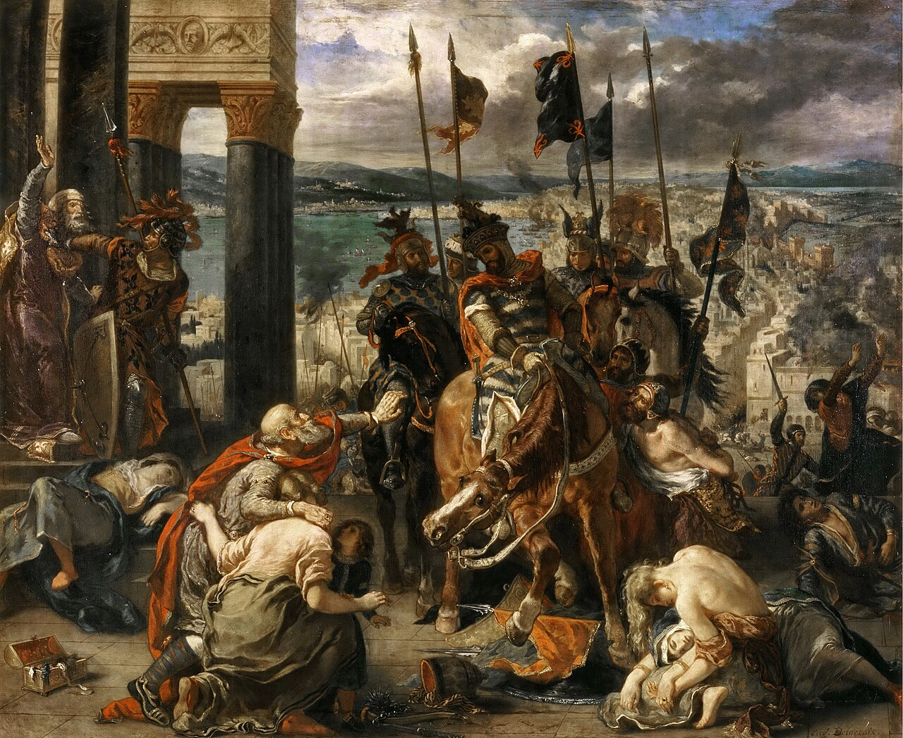
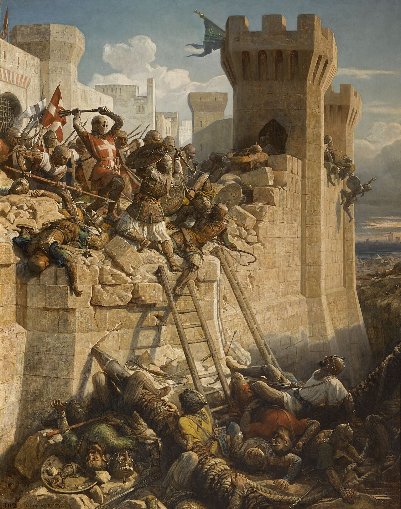
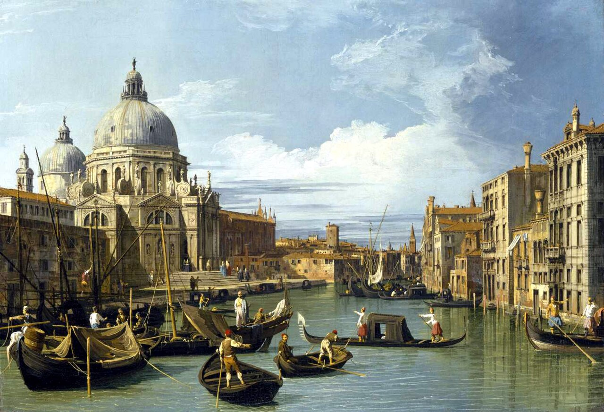
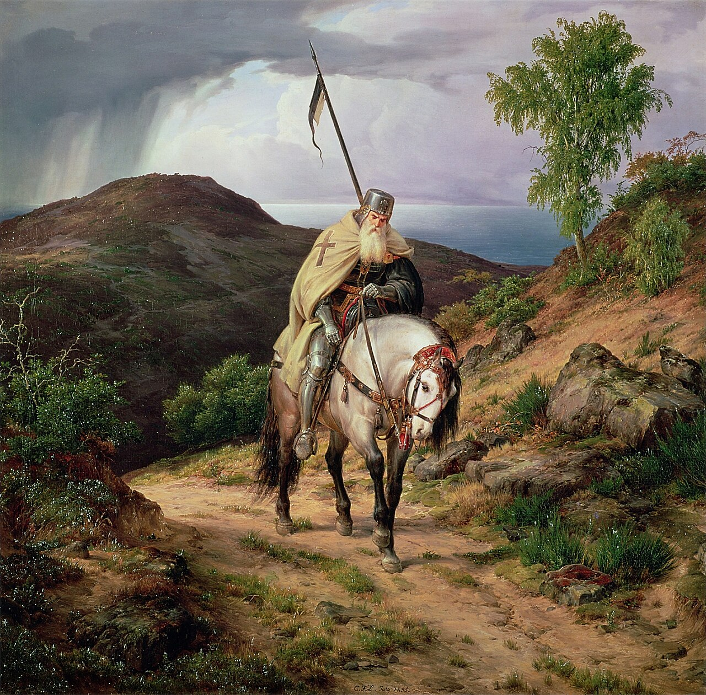
Усі картини й мініатюри — з Wikimedia Commons. Живопис XIX ст. — художня реконструкція, не «фото» події.
Суспільне надбання. Е. Сіньоль, «Взяття Єрусалима» (1099); Ф. Гаєз, Клермон; брати Лімбурги, «Вересень»; мініатюра відплиття (XIV ст.); Дж. Арчер, Петро Пустельник; мапа Першого походу (старий атлас); мініатюра Хаттіна / Саладін; портрет Річарда I; Е. Делакруа, Константинополь (1840); облога Акри (Версаль); Каналетто, Венеція; К. Ф. Лессінг, «Повернення хрестоносця»; портрет Олексія I.
CC BY-SA 4.0. Мапа сельджуків — Ktrinko / MapMaster. Крак де Шевальє — фото Bernard Gagnon.
CC BY-SA 3.0. Мапа держав хрестоносців (1135) — MapMaster.
Шрифти (SIL OFL). Cormorant Garamond, Source Serif 4.
Текст узгоджено з програмою всесвітньої історії для 7 класу: причини, межі I–IV походів, держави хрестоносців, наслідки.